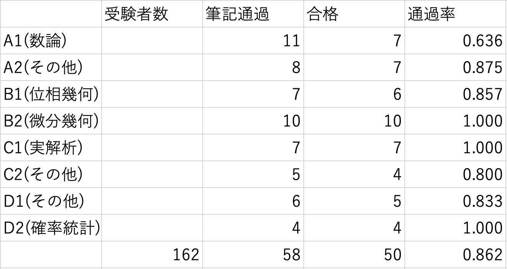

1. はじめに
2. 筆記試験
英語
1の(1)がかなりエッセイだった．建築用語や固有名詞が多くてよく分からん…ひとまず飛ばす．(2)は簡単．自分は気づかなかったのだが出典がかのCounterexamples of Topology だったらしく，英語が終わった後コモンルームで話題になった．
2へ．解析概論に載っているロルの定理の証明の英訳．難単語や奇怪な表現などもなく，多少ニュアンスやコロケーションの問題なども生じただろうが，普通に解くことができた．証明中で \(f\) が正値を取りうる場合と常に負である場合に分けられており，この場合分けが適切であるためには「負」を「ゼロ以下」であると解釈しなければならず，less than or equal to にするか悩んだ．結局 negative とした．
1の(1)に戻る．構造を抑えておけば単語が多少ズレていてもそれなりの点数だろうと思って適当に書く．難しくはあったのだが，よく分からない英文でもとりあえず分かることを詰め込んで書くというのは学部入試でよくやったことである．
A問題
筆答の1番から．(1)(2)はいつも通り簡単．(3)は何？対角化して対角成分の \(3\) 乗根をとれば行列の \(3\) 乗根の一つを用意できるが，成分が有理数にならない（実は，これは \(i\) と \(-i\) を交換するだけなので成分は有理数になる．しかしその事に気がついてはいない）．ひとまず放置し次へ．2番は臨界点だの停留点だのの定義がうろ覚えだが，京大対策の記憶と停留位相法が \(f'=0\) なる点を考えるのだという事実が \(f_x=f_y=f_z=0\) なる点を見つければよいのだと教えてくれた．こういった対称式を解くのは東大生の得意分野だ．(2)はコンパクト集合を適当にとって停留点と境界を考えれば良い．
位相は記述が大変そうで敬遠．複素解析は素朴な線積分であり，被積分関数は単純であったがなれないことはするものじゃないと飛ばす．常微分方程式の見た目が普段と変わらないので解けると思い突撃．思ったより時間を取られる（1時間ぐらい？）．試験前，コモンルームで周りにODEのコツを聞かれ，「ベルヌーイは出ない」とか言っていたが出てしまった．自分はベルヌーイも解けるので，騙してしまったようで本当に申し訳ない．
選択線形代数はいつも通り解けなさそうなので飛ばす．選択解析は何を言っているのかよく分からないが，他の問題よりは解けそうなので手を付ける．言われたとおりに評価すれば解けた．終わった後に聞いた感じだとそこそこ難しかったらしいので，実解析学徒としての経験が生きたのだろう．なお，\(n\) が小さいときに \(\log\) の中身が負になりうることを失念していた．\(n\) 十分大のときが本質だろ！
1の(3)に戻る．(2)が怪しいと考えて固有多項式をじっと睨むがどうにもならない．迷走の1つを紹介すると，\(X\) は \(X^3(X^3-E)(X^6+E)=0\) を満たすので，\(X\) の固有多項式はこれを割り切る3次式であり，その多項式から \(X\) を復元する，ということを考えた．無論固有多項式と行列は1対1対応するわけではないのでそのように取った \(X\) が \(X^3=A\) を満たすとは限らないのだが，\(1\) つ発見すればよいので偶然満たしていることを祈る，という寸法である．
そうこうしているうちに残り10分になった．\(A\) の固有多項式を展開すると \(A^4-A^3+A^2-A=0\) だから，符号が交代しているな…と思う．ここで天才のひらめき \((A^5-1)/(A-1)\) っぽくね？もっと言うと， \(A^4\) 倍したものを足すと \((A^9-1)/(A-1)\) っぽくね？ってことは \(A^9=A\) だろ！ \(X=A^3\) が条件を満たすことに気が付き，急いで計算する．あまりに \(A\) に依存した解法なので間違いがないか怖いが，もう時間がないのでとにかく急いで計算する．一応 \(A^2A\) と \(AA^2\) を両方計算し検算．解答には \(X=hogehoge\) としか書かなかった．
試験終了．1,2,5,7の4完から多少のミスが引かれて300点台後半だろうか．問題用紙，解答用紙，計算用紙の全てが回収されてしまったから，まだミスに気がついていない可能性がある．特に常微分方程式．
余談だが，A問題を解いている途中でシャープペンシルの芯が切れた．念のための鉛筆を持ち込んでいたので事なきを得たが，もしそうしていなかったらと考えるとゾッとする．ちゃんとシャープペンシルの黒色芯を持っていくようにしよう．
B問題
問題をざっと見て，9,10,12の3問を選ぶしかないと悟る．まず9の測度論から手を付ける．ここ数年の傾向に違わず状況設定が長い．今までは \(L^p\) 空間ばかりが出てきていたが，微分可能性と導関数の可積分条件がついておりソボレフ空間（古典的な微分可能性）で驚いた．しかも意味のわからないソボレフ不等式みたいのが与えられている．しかし自分は解析学専攻の中ではソボレフ空間に親しんでいる方ではあるし，むしろ有利になったと気持ちを切り替え問題を読む．
(1)は自明．明らかに誘導．(2)は(1)を使うために \(s=f_n(x)^2\) としてみるが，\(t\) をどのようにとっても \(f_n(x)^2\) を上手く評価することができない．そもそも \(\int_\mathbb{R}f_n(x)^2\log(f_n(x)^2)d\mu(x)\) は一様有界としかわかっていないのだから，いくらそれで \(f_n(x)^2\) を評価しても \(\|f_n\|_{L^2}\to0\) は出てこないのである．少し焦るが，自分ならそのうち解けるはずと信じてひとまず(3)に進む．
(3)(i)は問題文が複雑だが，要するに \(e^G\) を \(W\) の単調増加列で近似したいということだとわかった．設定があからさまだったのですぐに解けた．(ii)を考えるが \(g_n\) のソボレフノルムが一様有界ではないから話がうまく進まない．(2)が解けていないのもあってあまり集中できず，気持ちを切り替えるためにも一旦10に行くことにする．
変な測度が書いてあってビビる．ラドン・ニコディム微分を思い出して \(\int f(x)d\mu(x)=\int xf(x)dx\) であることを確認し，安堵．一致しない集合の測度が正だったらそこでの \(|f-g|\) の積分が正になり，十分大きい \(N\) について \(f_N\) を経由させれば矛盾するだろうと考えた．実際そうだが，なんと \(L^2\) ノルムの三角不等式で \(1/2\) 乗をつけ忘れるという大失態をかます．しかし気がついていないのでそのまま進む．
(2)は \(X\) が閉部分空間なので閉グラフ定理より一発なのだが，その条件を忘れていた自分は \(X=\{f\in L^2(I)\mid \int_Ix|f(x)|^2dx\lt\infty\}\) のとき \(T\) 有界にならなくね？と思い焦る．ひとまず先に進むことにする．
(3) \(a\) を \(f\) の後に取れると勘違いし，優収束定理から一発だと書く．幸いなことに(4)を考える際に \(a\) を \(f\) に依らずに取らなければならないことに気づき，修正して事なきを得る．
(4) \(\{f\cdot\chi_{[0,a]}\mid f\in X\}\) の元で \(X\) の元を近似しようとする． \(\{f\cdot\chi_{[0,a]}\mid f\in X\}\) のCONS（有限次元なのにCONS?）をとり，\(f\cdot\chi_{[0,a]}=\sum_{i=1}^Nc_ig_i\chi_{[0,a]}\) としたときに \(f\sim\sum_{i=1}^Nc_ig_i\) となる一方で \(f\) は先程取った \(\{g_n\}\) のどの元とも直交するようにとれる，という論法で示そうとしたが，\(\{g_n\}\) は \(X\) の直交系ではないために \(f\sim\sum_{i=1}^Nc_ig_i\) の近似が \(\{f\cdot\chi_{[0,a]}\mid f\in X\}\) の次元，ひいては \(a\) に依存することを否定できなかった．試験終了後に気がついたことだが，CONSをとることにこだわらず有限次元閉単位球のコンパクト性を用いて \(\varepsilon\)-被覆を取ればこの問題は解決する．したがってこの問題は一般の \(L^p\) 空間に対しても成立するのである！
12番 PDEに進む．シュレディンガー！熱方程式が出てほしいとばかり祈っていたのでこれまた驚いた．時間不変性を示すために \(t\) 微分するが，複素数値であることを忘れて \(\frac{\partial}{\partial t}|u|^2=2uu_t\) としてしまう．今まで1問も解けていないのでここらで本当に焦ってくる．問題文を読みかえしている途中で複素数値であることに気が付きなんとか(1)を解く．
(2)がどうにもならない．\(t\) 微分すると同じ形が出てきて常微分方程式が立ち \(1-e^{-t}\) タイプになるかと思ったが，全くそんなことはない．\(a\) の有界性を用いて不等式にしてグロンウォールなども考えるが，厳しい．
9に戻る．(1)をいじるが(2)が成り立ちそうにない．(1)を忘れて有限測度を利用しエゴロフを使おうと思い至る．すると \(t,\delta\) を上手くとることで議論が回ることに気がつく！結局エゴロフかい．
(3)(ii)は解けない．なにこれ？？？
10へ．(4)をゴチャゴチャしていると証明が回っているっぽいことに気がつく．しかしそれはミスで，気づかぬうちに \(\{g_n\}\) が \(X\) の直交系であると嘘をついていたのだ．
これ以降，9や11を色々触っていたが，進展は得られなかった．0完3半．しかも全て本質問題を解けていないので，配点次第では100/300を割っているだろうと考えていた．9(3)(ii)と11(2)を解けている人が周りにいなかったので基準が甘くなり，A問題の分で合格することを祈ることにした．
3. 口頭試問
合格発表は数理科学研究科等にも張り出されるのだが，自宅で見ることにした．筆記試験受験者162人中58名が口頭試問に進めることになった．定員が53名（これは上限であり，これ以下の人数しか合格しないことも多い）なので筆記でかなり落としてきている．
合格者はA（代数），B（幾何），C（解析），D（応用数理）の4つに分けられ，さらにそれぞれ分野ごとに2つに分けられる．計8つの部屋で同時に試問が行われるということである．詳細な分野は公表されていないが，周りを見ている限りではA1が数論，A2が表現論や代数幾何などその他の代数，B1が位相幾何，B2が微分幾何，C1がPDE，調和解析などの実解析，C2が複素解析，作用素環論などその他の解析，D1が数学基礎論などその他の応用数理，D2が確率・統計である．今年はなぜかB2-2という一人だけしかいない部屋があった．内部生（同期）なのだが，結局なぜ隔離されたのか分からなかったらしい．
私は当然C1に割り振られた．同一部屋内の面接順がどのように決まっているかは未知なのだが，今年のC1は受験番号順のようだった．1日目（8月27日（木））の午前中である．
当日は大講義室で待機し，呼び出しを待つことになる．スタッフの人が呼びに来るのだが，一度別の人がたまたまトイレに行っていたときに名前が呼ばれ，反応がないのでスタッフの人が戻っていったことがあった．戻ってきた受験生に既に呼ばれたと伝えたら慌てて追いかけていった（スタッフに声をかけろと思われるかもしれないが，その受験生とは面識がなく，呼ばれた受験番号が本当にその人なのか分からず躊躇してしまった）．
同時間帯同教室に複数人が該当する場合があるのだが，それはあくまで集合時刻であって，同時に面接が行われるわけではない．よって集合から1時間以上待たされる場合がある（私がそうであった）．私は同じ時間に待機している同期がいたので雑談をして暇をつぶすことができたのだが，特に外部生の人などは正気の保ち方を考えておくと良いかもしれない．
試問の内容については残念ながら口止めがなされている．口止めは試験全体の終了あるいは合格発表までという説があるが，安全策をとる．というか，緊張していて口止めされたことは覚えていても，何をいつまで喋ってはならないと言われたか忘れてしまった．試問時間が50分ほどであったことだけは外から観測できることなのでここに書いておく．
4. 結果，データ
- 合否：合格
- 開示：分かり次第追記
- 合格状況

受験者数は筆記試験の座席表から．